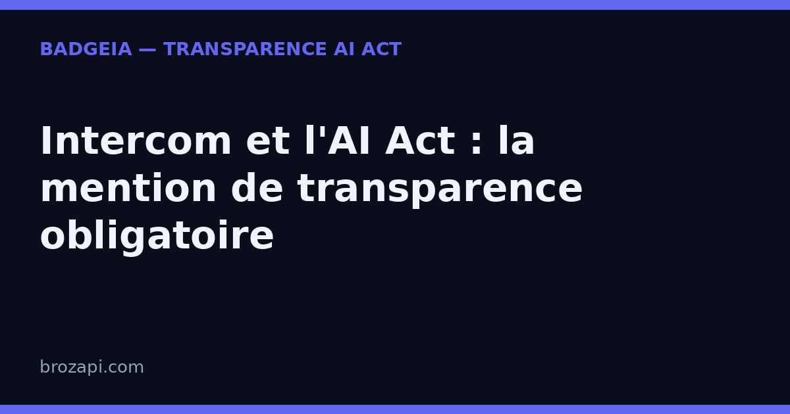

Intercom et l’AI Act : la mention de transparence obligatoire

Publié le · Mis à jour le 6 septembre 2026 · Lecture : 7 minutes
Intercom n’est pas un simple widget de chat : c’est une plateforme de support client devenue « AI-first », dont l’agent Fin répond désormais automatiquement à une part croissante des conversations. Fin résout les questions des visiteurs en s’appuyant sur vos articles d’aide, vos e-mails et votre documentation — et ne bascule vers un humain que lorsqu’il n’est pas assez sûr de lui.
C’est précisément cette promesse qui rend l’obligation de transparence aussi sensible. Depuis le 2 août 2026, l’article 50 de l’AI Act impose d’informer clairement vos visiteurs qu’ils interagissent avec une intelligence artificielle. Or Fin est justement conçu pour être fluide, naturel — facile à confondre avec un agent humain de votre équipe. Plus il est performant, plus le visiteur peut croire, à tort, qu’il échange avec une personne. Plus la mention de transparence devient nécessaire.
Voici ce que cela change concrètement quand on utilise Intercom, et comment vous mettre en règle sans dégrader une machine qui, elle, répond très bien.
Intercom, c’est quoi exactement ?
Pour comprendre pourquoi la mention est incontournable, il faut saisir ce que fait réellement Intercom — et la place centrale qu’y occupe Fin.
Une plateforme de messagerie client, pas un simple chat. Intercom réunit dans un même espace le Messenger (la bulle de chat sur le site ou dans l’app), la boîte de réception partagée, les articles d’aide et l’outbound (messages ciblés vers les visiteurs). Historiquement connu comme « le business messenger », Intercom a depuis opéré un virage résolu vers l’IA.
Fin, l’agent IA au cœur de la plateforme. Fin est l’agent de résolution d’Intercom : il lit la question du visiteur, cherche la réponse dans vos contenus (aide, documentation, snippets, e-mails), et soit répond, soit exécute une action, soit passe la main à un humain. Il tourne sur des modèles « support-tuned » — c’est-à-dire spécialement entraînés sur des conversations de support — et sur une architecture de récupération d’information (Retrieval-Augmented Generation) qui lui permet de citer vos contenus plutôt que d’inventer.
Un agent multithread et multicanal. Fin ne se limite pas au chat : il peut répondre sur e-mail, WhatsApp, SMS et par téléphone (via Fin Voice), dans plus de 45 langues. Il ne résout pas seulement des questions : il peut, via des « procedures », mettre à jour une commande, traiter un remboursement ou modifier une fiche client.
Résultat : un visiteur qui arrive sur votre site peut être accueilli, compris et dépanné — par une machine — sans jamais avoir vu un humain. C’est exactement la situation que l’article 50 de l’AI Act entend encadrer.
Pourquoi Intercom déclenche l’article 50
L’article 50 du règlement européen sur l’intelligence artificielle (AI Act, règlement 2024/1689) pose une règle simple : toute personne qui interagit avec un système d’IA doit en être informée, « de manière claire et distincte », au plus tard au moment de la première interaction. L’objectif est d’éviter qu’un internaute soit trompé sur la nature artificielle de son interlocuteur.
Fin étant explicitement un agent IA, l’obligation s’applique sans ambiguïté dès qu’il est activé sur votre site. Il n’y a ni seuil de taille ni exception « support » : c’est l’interaction elle-même qui déclenche la règle. Et plus votre agent est performant, plus le risque de confusion est réel — c’est le paradoxe à garder en tête : l’efficacité de Fin et la conformité ne s’opposent pas, mais la seconde devient d’autant plus urgente que la première est réelle.
Enfin, rappelons le point de responsabilité, identique à tous les outils : vous restez responsable de ce qui s’affiche sur votre site. Que l’IA soit fournie par Intercom ou par un tiers ne change rien : c’est vous qui décidez de ce que voient vos visiteurs.
Ce que vous devez afficher
L’obligation reste proportionnée, mais elle a des exigences précises. Pour un chat Intercom/Fin intégré à votre site, voici les éléments à mettre en place :
- Une mention visible dès la première bulle. Le message d’ouverture doit annoncer la nature de l’interlocuteur. Exemples prêts à coller : « Bonjour, je suis l’assistant virtuel de [votre entreprise], basé sur l’IA. Je peux vous répondre tout de suite, et un membre de l’équipe peut prendre le relais à tout moment. » ou « Je suis un assistant basé sur l’IA, là pour vous aider. Un conseiller peut reprendre la conversation si vous préférez. »
- Un rappel persistant dans la fenêtre. Une ligne discrète — « Assistant IA · un conseiller peut vous répondre » — maintient l’information visible pendant toute la conversation, y compris sur mobile.
- Une porte de sortie vers un humain. L’article 50 ne l’exige pas formellement, mais annoncer la possibilité de passer à un humain rassure et renforce votre transparence. C’est d’ailleurs le comportement natif de Fin, qui escalade quand il n’est pas assez confiant.
- Une trace de votre configuration. Noter la date de mise en place, le texte affiché et les pages concernées est une bonne pratique recommandée. Attention : ce « dossier de preuve » n’est pas une obligation légale en soi — c’est une précaution utile en cas de contrôle, pas une exigence du texte.
Comment configurer la transparence dans Intercom
Bonne nouvelle : tout se règle dans l’interface, sans toucher au code. Voici les réglages à vérifier, du plus important au plus avancé.
1. Le message d’accueil de Fin. C’est l’emplacement clé. Personnalisez la première bulle pour que Fin s’annonce comme assistant IA dès l’ouverture de la conversation. C’est la première chose que lit le visiteur, et la plus simple à vérifier — pour un contrôleur comme pour un client.
2. Le lanceur (Messenger) du chat. Selon votre configuration, Intercom peut afficher un titre ou un sous-titre à côté de la bulle. Profitez-en pour y glisser une mention courte : « Assistant IA — un humain peut prendre le relais ».
3. Le nom de l’agent. Beaucoup d’équipes personnalisent Fin avec un prénom. Si vous tenez à un prénom, associez-le toujours à la nature artificielle : « Fin, assistant virtuel basé sur l’IA » plutôt qu’un simple « Fin » qui laisse planer le doute. Un prénom humain sans précision crée un risque de confusion réel.
4. Les autres canaux (e-mail, WhatsApp, téléphone). Fin peut répondre en dehors du chat. Appliquez la même règle partout : une mention en début d’échange, quelle que soit la surface. Sur un site francophone, la mention doit être compréhensible en français.
5. Le passage à l’humain. Vérifiez que l’escalade vers un agent humain est configurée (Fin le fait par défaut quand il manque d’information), et annoncez cette possibilité dans le message d’accueil. C’est un argument de confiance autant qu’une exigence de transparence.
Une fois ces réglages faits, testez simplement : demandez à une personne extérieure au sujet de lire le chat et de dire, en quelques secondes, si elle comprend qu’elle parle à une IA. Si elle hésite — ou pire, si elle croit parler à un humain — reformulez la mention.
Mini-FAQ : les questions que se posent les équipes support
Mon bot Fin ne répond qu’aux questions de support, suis-je concerné ?
Oui. Dès que Fin engage la conversation avec un visiteur — avant même de répondre —, l’article 50 s’applique. Peu importe qu’il ne fasse que du support : c’est l’interaction entre une personne et un système d’IA qui déclenche l’obligation.
Fin ne tourne que sur mes articles d’aide interne, cela change-t-il quelque chose ?
Non. Le fait que Fin s’appuie sur votre base de connaissances ne remplace pas la mention de transparence. L’obligation porte sur l’interaction, pas sur la provenance des réponses. Un agent qui cite vos sources doit être signalé exactement comme un agent qui ne le fait pas.
La mention « Intercom » ou « Fin » dans le chat suffit-elle ?
Non. La marque de l’outil indique l’éditeur de la technologie, pas la nature artificielle de l’interlocuteur. Elle ne dit pas clairement « vous parlez à une IA ». Ajoutez votre propre message d’accueil explicite, indépendamment du branding.
La mention doit-elle être en français ?
Elle doit être compréhensible par le visiteur : sur un site francophone, rédigez-la en français, dès la première bulle d’accueil. Pour un site multilingue, adaptez le texte à chaque langue, en particulier dans le message d’accueil du chat.
Qui est responsable si la mention manque ?
C’est vous, en tant qu’exploitant du site. Intercom fournit l’outil, mais c’est vous qui choisissez ce qui est affiché à vos visiteurs. Conservez une trace de votre configuration et de sa date de mise à jour : ce sera utile en cas de contrôle.
Que risque-t-on concrètement ?
Le non-respect de l’obligation de transparence expose à des amendes administratives prévues par l’article 99 du règlement, pouvant atteindre 15 millions d’euros ou 3 % du chiffre d’affaires mondial (le montant le plus élevé étant retenu). Pour les très petites entreprises, les montants sont appliqués avec proportionnalité — mais l’obligation, elle, ne connaît pas d’exception. Au-delà du risque financier, c’est une question de confiance : un visiteur qui découvre seul qu’il parlait à une machine est un visiteur perdu.
Vérifiez votre site en 30 secondes
Notre scanner détecte automatiquement Intercom sur votre site et vérifie la présence d’une mention de transparence :
Si une mention manque, le kit BadgeIA (39 €) vous fournit un badge de transparence prêt à installer en deux lignes de code et une page registre datée, votre preuve de bonne foi en cas de contrôle.
Cet article est fourni à titre informatif et ne constitue pas un conseil juridique. Pour une analyse de votre situation, consultez un professionnel du droit.
Pour aller plus loin : AI Act art. 50 : le guide complet · La checklist de conformité PME · Où afficher la mention de transparence IA
Guides par plateforme : Drift · Crisp · CustomGPT · DocsBot · HubSpot · Tawk.to